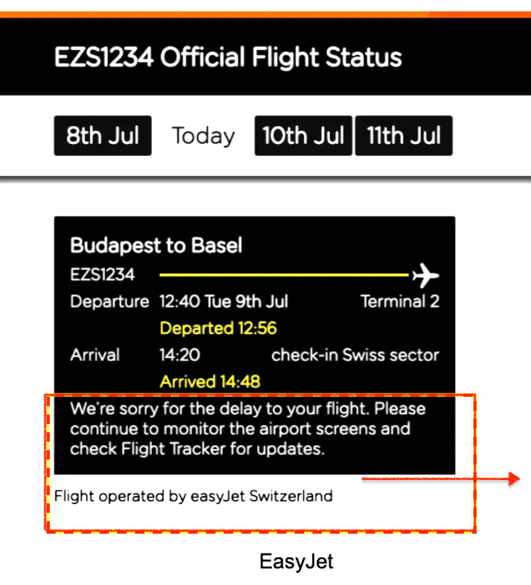

Understanding Passenger Needs
Airports can be overwhelming, especially during delays. Our project explores how to make flight information clearer, reducing passenger stress and confusion.
Scenario Analysis
Consider Marco, who’s waiting at the terminal for his daughter's delayed flight. He needs accurate, helpful information to understand the situation. Clear communication tools are key to meeting his goals.

Proposed Solution
By providing clear, friendly messages like, "We're sorry for the delay to your flight. Please continue to monitor the airport screens and check the Flight Tracker for updates," passengers feel more informed and supported.